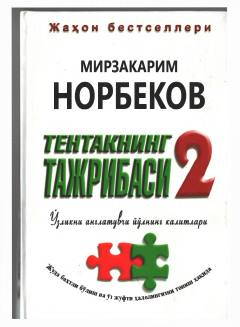

THInsonni o'zini anglash va baxtli hayot sari yetaklovchi motivatsion qo'llanma.
Ushbu kitob o'quvchini harakatga келтириш, ҳаёт мазмунини англаш ва инsonning o'zidagi ijodkorlikni uyg'otishga qaratilgan amaliy tavsiyalarni o'z ichiga oladi. Muallif o'zining ko'p yillik tajribasiga tayanib, insonni muvaffaqiyat va baxt sari yetaklovchi kalitlarni ochib beradi. Kitobxon o'zining ichki imkoniyatlarini kashf etib, hayotini yaxshi tomonga o'zgartirish yo'llarini o'rganadi.